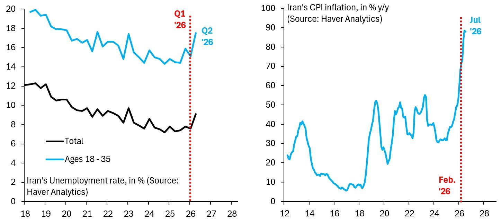
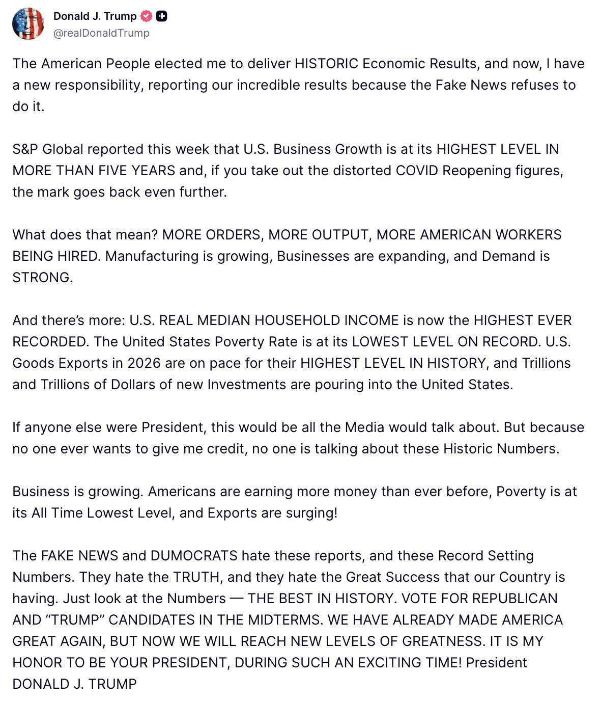

BREAKING: China has begun reducing support for Iran after Trump urged Chinese President Xi Jinping to end assistance.
Following the launch of Operation Economic Outcast, @USTreasury imposed targeted financial measures against banks and aviation service providers. At my direction, teams were dispatched across the globe to engage with countries and demand action against the Iranian regime.
These efforts are delivering results. Türkiye and Oman announced the cessation of Mahan Air flights to their countries. The UAE has halted all flights by Iranian airlines, and top commercial banks in the UAE and Türkiye have stopped transacting with Iran.
Even Iran’s leadership has acknowledged the economic toll of the war, as the value of the rial has fallen to record lows.
I appreciate the governments of the UK, Türkiye, Oman, and the UAE. We will continue working together as there is more to be done to prevent Tehran from carrying out its terrorist agenda.
Iran has played its hand very badly. It's lost control of the Strait of Hormuz, where tanker traffic is the highest in many months. This means Iran has nothing to offer Trump in negotiations, even as its economy is in complete and utter meltdown... https://robinjbrooks.substack.com/p/the-economic-implosion-of-iran

NEW — 🇺🇸🇮🇷 The U.S. Strategic Command is broadcasting EAM messages at a high rate, repeatedly mentioning the previously unheard-of codename "Belt Chain." We now know: the final and decisive operation is underway.
JUST IN — 🇺🇸🇮🇷🇮🇶🇸🇾🇸🇦 U.S. Strategic Command is reportedly broadcasting a high volume of EAM messages to the Middle East, repeatedly referencing a previously unheard-of code called “Belt Chain.”
JUST IN - Russia ready to help stabilize situation in Strait of Hormuz: Russian foreign minister Lavrov at UN
We’re launching the Army of Robots.
In 2022, we launched the Army of Drones. Today, drones account for over 95% of battlefield strikes, and Ukraine has more than 700 UAV manufacturers.
Now we need the next technological breakthrough: the robotization of warfare.
The goal is simple — save lives. Robots should take on the most dangerous missions: evacuating the wounded, delivering ammunition, mining and demining, reconnaissance, defending positions and engaging targets.
The Army of Robots is not one company. It’s an ecosystem. We will invest in defense tech companies, launch our own technology projects, test them with the military and scale what works on the battlefield.
We’re now looking for defense tech companies and engineers working on robotic technologies — as well as a CTO / Tech Lead for the Army of Robots.
Join us:

🚨#BREAKING: 80 of 82 new resident doctors hired by Rochester General Hospital are reportedly foreign physicians on H-1B or J-1 visas, with just 2 Americans hired.
JUST IN: AI data centers are projected to absorb $10,300,000,000,000.00 of spending by 2032, roughly one-third of the entire U.S. economy today.
JUST IN: Treasury Sec. Scott Bessent declares the U.S. economy has entered “the acceleration phase.”